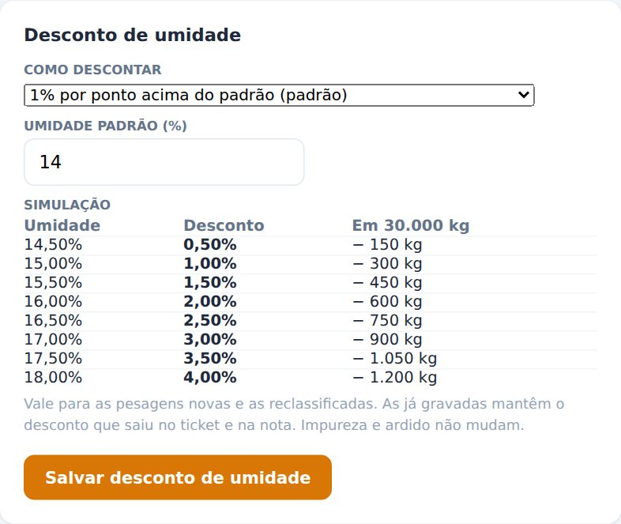
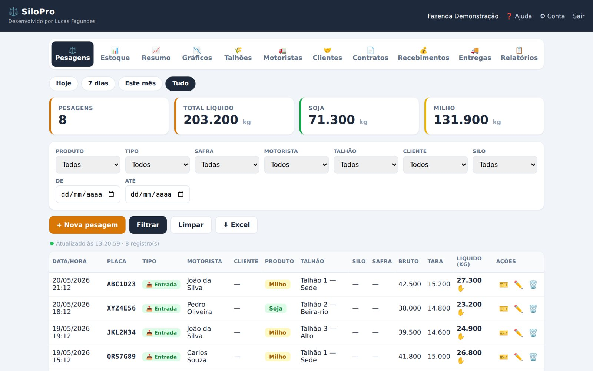
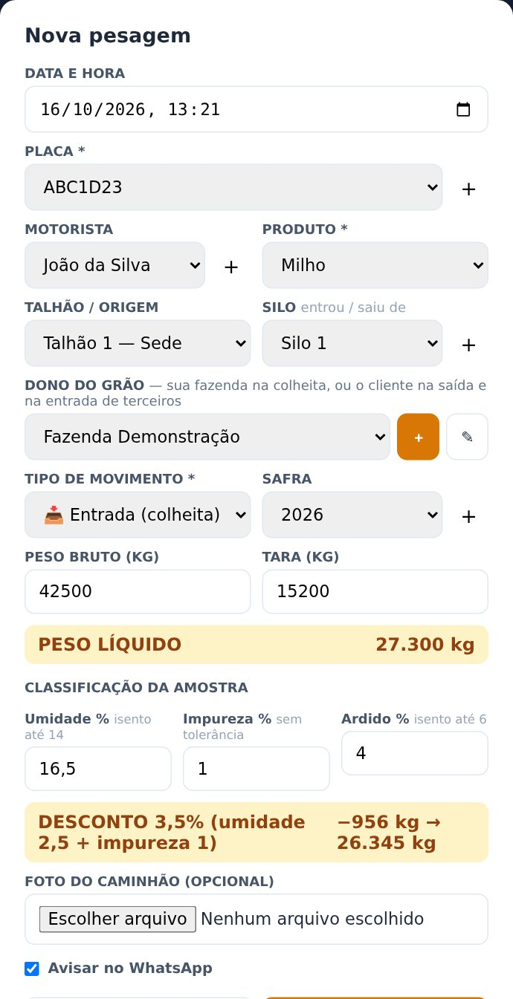
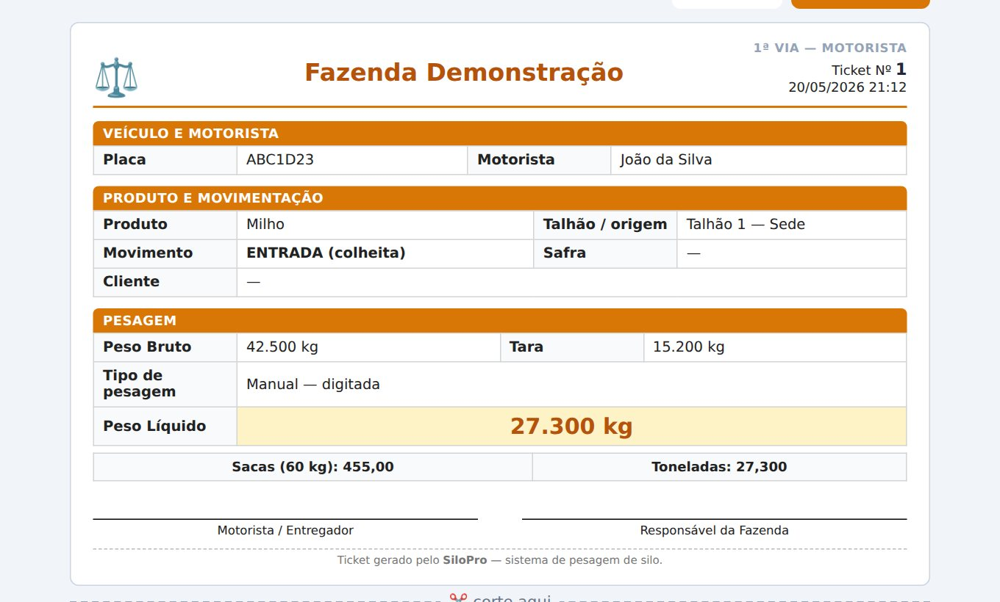
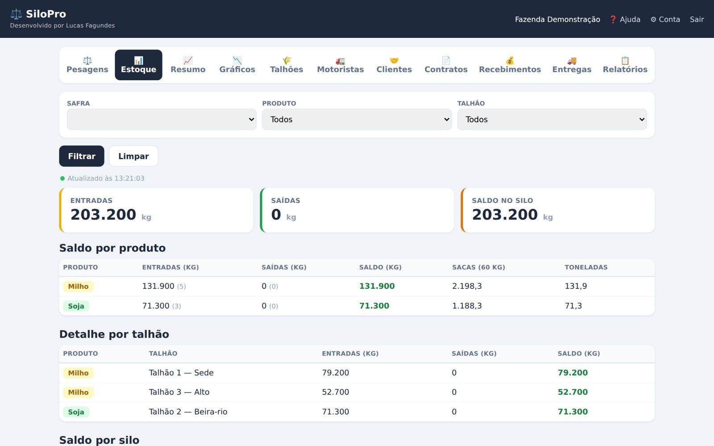
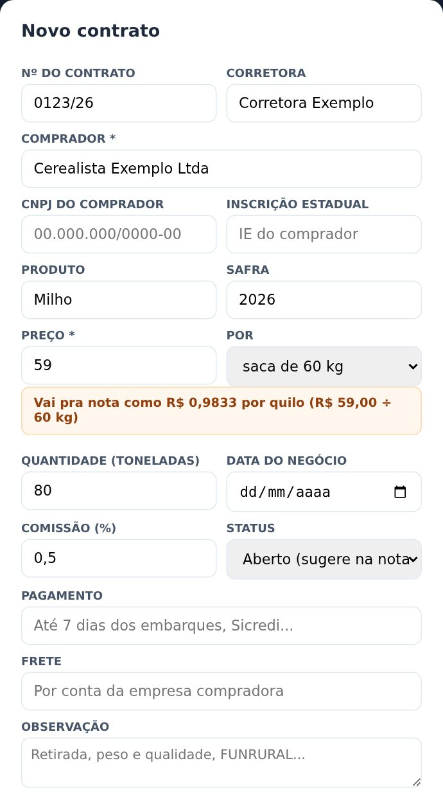
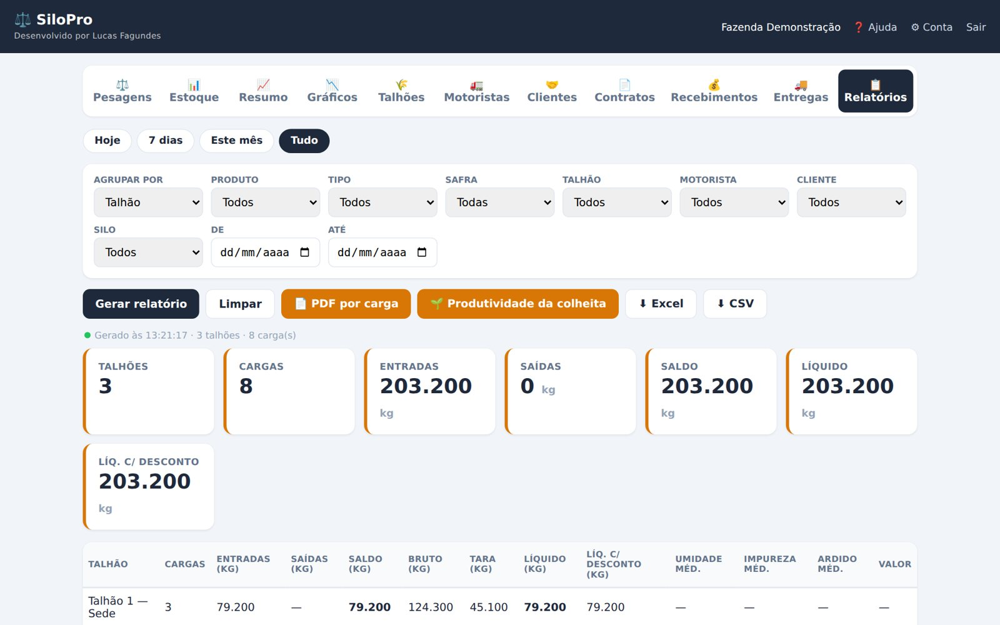
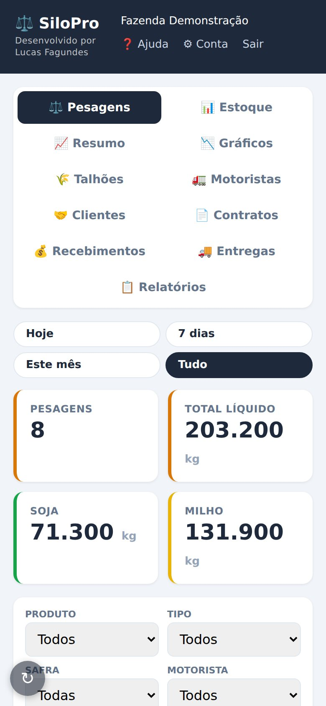

Guia de primeiros passos
Da conta criada até a primeira carga pesada: a ordem de configurar, a pesagem do dia a dia, estoque, contratos, recebimentos, nota de produtor e as dúvidas mais comuns.
silopro.luqsys.com.br · Suporte no WhatsApp (45) 99107-7788
Desenvolvido por Lucas Fagundes · Luqsys
1. Como acessar
1Crie a contaEm silopro.luqsys.com.br, toque em Criar conta grátis: seu nome, nome da fazenda, e-mail, WhatsApp e senha. São 3 dias grátis.
2Entre com e-mail e senhaNo navegador do celular ou do computador. É o mesmo sistema nos dois.
3Face ID (opcional)Depois de entrar, toque em 🔐 Ativar Face ID no topo. Na próxima vez, use Entrar com Face ID. Vale pro aparelho onde foi ativado. A senha continua valendo.
4Trocar ou esqueceu a senhaPra trocar: ⚙ Conta → Trocar senha (pede a senha atual). Esqueceu? Fale com o suporte no WhatsApp.
5Instale no celularAbra silopro.luqsys.com.br/instalar e siga o passo a passo do iPhone ou do Android. Fica com ícone na tela de início, igual um aplicativo.
2. Primeiros passos: deixar a conta pronta
Faça uma vez, nesta ordem. Depois é só pesar.
1Dados da fazendaEm ⚙ Conta: nome da fazenda, WhatsApp (recebe o aviso de cada pesagem), CNPJ e endereço, que saem no ticket de pesagem.
2Desconto de umidadeTambém em ⚙ Conta. Escolha a regra do armazém: 1% por ponto acima do padrão (é o que vem), fator por ponto, fórmula de quebra ou a tabela do armazém. A simulação mostra o desconto antes de salvar.
3CadastrosTalhões com a área em hectares (aba 🌾 Talhões), motoristas (🚛 Motoristas) e compradores (🤝 Clientes). Placa, silo e safra se criam no + ao lado de cada campo, na própria pesagem.
4Estoque inicial dos silosSe os silos já tinham grão antes do SiloPro, lance em 📊 Estoque → + Lançar estoque inicial. Sem isso o saldo do silo fica negativo.
5Programa da balançaFica no computador ligado à balança. Fale com o suporte pra instalar. Ele usa a URL e o token que estão em ⚙ Conta → Conexão do app do silo. Sem ele, dá pra lançar a pesagem à mão.

⚙ Conta → Desconto de umidade, com a simulação
3. O dia a dia: a pesagem

Aba Pesagens: totais do período, filtros e a lista das cargas
⚖️ Pela balança
- Caminhão carregado: no programa do silo, preencha placa, motorista, produto e talhão e capture o peso bruto.
- Caminhão vazio: capture a tara. O líquido é bruto menos tara.
- Registre. A carga aparece sozinha na aba Pesagens.
Se a internet da fazenda cair, o programa guarda a pesagem e manda quando a conexão voltar. Na lista, ⚖️ ao lado do peso é lido da balança, ✋ é digitado à mão.
💡 Escolha Hoje, 7 dias, Este mês ou Tudo, ou filtre por produto, tipo, safra, motorista, talhão, cliente, silo e datas. ⬇ Excel baixa o que está filtrado.
4. Lançar à mão e classificar
- Aba Pesagens → + Nova pesagem.
- Placa e produto são obrigatórios. Escolha motorista, talhão, silo e safra.
- Dono do grão: sua fazenda na colheita, ou o cliente na saída e na entrada de terceiros.
- Tipo: 📥 Entrada (colheita) ou 📤 Saída (expedição).
- Bruto e tara: o peso líquido aparece na hora.
- Classificação da amostra, se mediu. A faixa amarela mostra o desconto e o peso final antes de salvar.
- Foto do caminhão (opcional) e Avisar no WhatsApp.
Como o desconto é calculado
| Umidade | A regra escolhida em ⚙ Conta. Sem regra: 1% por ponto acima de 14%. |
| Impureza | Sem tolerância: o percentual inteiro desconta. |
| Ardido | Desconta o que passar de 6%. Cliente marcado como Grão da própria fazenda não desconta ardido (fica só registrado). |
Campo em branco quer dizer "não medido". Mudou a regra de umidade? Vale pras pesagens novas e as reclassificadas. As já gravadas mantêm o desconto do ticket e da nota.

Nova pesagem com classificação
🔒 Editar (✏️) e excluir (🗑️) pedem a senha da conta. Pesagem com nota autorizada não pode ser excluída: cancele a nota antes.
5. Ticket e estoque
🎫 Ticket de pesagem
O 🎫 na linha da carga abre o ticket pronto pra imprimir, em 2 vias (motorista e fazenda), com placa, produto, pesos, sacas, toneladas, a classificação (quando medida) e espaço pra assinatura.

Ticket de pesagem (1ª via)
📊 Estoque
- Saldo por produto e por talhão: entradas, saídas e saldo, em kg, sacas de 60 kg e toneladas.
- Saldo por silo, contando o estoque inicial.
- Qualidade do grão: média da classificação de cada silo, pesada pelo peso das cargas.
- Depositado em terceiros: o que foi direto da lavoura e está a fixar. É seu, mas não entra no saldo dos seus silos.

Estoque: saldo por produto e por talhão
6. Contratos, recebimentos e entregas
📄 Contratos
- + Novo contrato: número, corretora, comprador, produto, safra, preço (saca, arroba, quilo ou tonelada) e quantidade. O R$/kg aparece na hora.
- Tem o PDF ou a foto da confirmação de negócio? 📄 Ler contrato preenche o formulário pra você conferir e salvar.
- Contrato Aberto é sugerido na hora da nota: o preço já vem, e aparece quanto do contrato já foi entregue.
🤝 Clientes
Nome, CPF ou CNPJ, inscrição estadual e endereço. O 🔎 Buscar CEP preenche o endereço e o código do município, que a nota precisa.

Novo contrato
💰 Recebimentos
| Extrato por empresa | O que cada compradora levou, pagou e ainda deve. O 🖨 abre o extrato pronto pra imprimir ou mandar em PDF. |
| Pagamento | Em Pagamentos carga por carga, o ➕ da carga: valor bruto da nota, data e as retenções (FUNRURAL, SENAR, outros) em % ou R$. O líquido sai calculado. O ➕ aparece quando a carga tem valor: nota emitida ou 💰 Definir valor. |
| Pagar várias | Uma transferência só pagou várias cargas: escolha o cliente, marque as cargas, e os descontos são divididos na proporção de cada uma. |
🚚 Entregas em terceiros
Carga que saiu da lavoura direto pra cooperativa não passa na sua balança. Toque em 📷 Ler romaneio, tire a foto (ou mande o PDF), confira o que o sistema leu e salve. Sem foto, + Lançar à mão. Entrega a fixar fica como lembrete no topo do painel até ser fixada.
7. Relatórios e nota de produtor
📋 Relatórios
Agrupe por talhão, produto, motorista, cliente, placa, safra, silo, tipo, dia ou mês, filtre e toque em Gerar relatório. Saem também: 📄 PDF por carga (com classificação, nota e valor, pra mandar pro comprador), 🌱 Produtividade da colheita (sacas por alqueire de cada talhão, pelo peso já descontado, só talhão com área cadastrada), ⬇ Excel e ⬇ CSV. A aba 📈 Resumo e a 📉 Gráficos mostram a safra por produto e entradas × saídas no tempo.

Relatórios agrupados por talhão
🧾 NFP-e (nota de produtor)
- Antes da primeira: preencha os Dados fiscais em ⚙ Conta (CPF, nome, inscrição estadual de produtor e endereço, exatamente como no cadastro da inscrição) e fale com o suporte.
- A nota sai de pesagem de Saída com cliente preenchido: toque no 📄 da linha.
- Revise o destinatário (o que corrigir ali fica salvo no cliente), a quantidade e o valor por kg. Com contrato aberto, o preço vem dele.
- 👁 Pré-visualizar e depois emitir. Pra dividir a carga em mais de uma nota, emita com quantidade menor: o restante fica pra próxima.
Nota autorizada tem os botões DANFE, Enviar, XML e Cancelar.
8. No celular e dúvidas comuns

Pesagens no celular
O saldo do silo ficou negativo.Saiu grão que nunca teve pesagem de entrada no SiloPro. Lance o que o silo já tinha em Estoque → + Lançar estoque inicial.
A pesagem da balança não apareceu.Veja se o programa do silo está aberto e se o computador tem internet. Sem internet, a pesagem fica guardada e sobe quando a conexão voltar. Se continuar, fale com o suporte.
Por que o peso com desconto é menor que o líquido?É a classificação: umidade, impureza e ardido acima do limite. O ticket mostra quanto cada um tirou.
Funciona no celular e no computador ao mesmo tempo?Sim, com o mesmo login. O que entra pela balança aparece no celular.
Onde acho ajuda dentro do sistema?No topo do painel, ❓ Ajuda: tem busca (ex.: "umidade", "nota", "romaneio") e o botão de falar com o suporte.
Quanto custa?Depois dos 3 dias grátis, R$ 99/mês. A situação do plano fica em ⚙ Conta.
💬 Suporte: WhatsApp (45) 99107-7788, ou pelo botão Falar com o suporte na Ajuda.